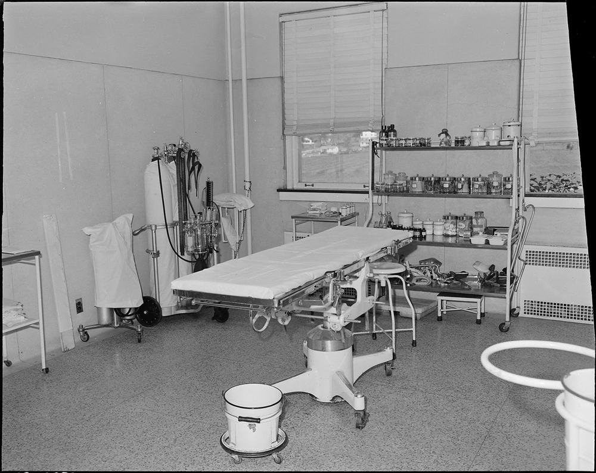

故事
醫生叫他別說話，他卻忍不住大吼了一聲。五十年代中期，Miles Davis 動了喉嚨手術，切除聲帶上的小瘤。醫生交代，術後要好幾天完全不能講話。
據說沒過幾天，他就跟一個談生意的人吵了起來。他一激動，扯開嗓子大吼。從那天起，他的聲音再也回不去了。

他說話只剩下一種沙啞、像在耳邊低語的氣音。這把嗓子，後來反而變成他的招牌。下次聽到 Miles 的訪問錄音，想想那一聲吼。
故事後面
五十年代中期，Miles Davis 動了喉嚨手術，醫生要他休息幾天不說話。據他自傳說，他沒多久就和人起爭執大吼，從此聲音再也回不去。
那種沙啞、像耳語的嗓音，反而成了他的辨識度，很多訪問和模仿都會學這個聲音。
他的小號音色也常被形容成「像在耳邊說話」，和嗓音一樣低調、私密。
這樣聽
聽他用弱音器吹出的小號聲，和他說話的聲音一樣近。
逐句英文
His doctor told him not to speak, but he couldn't help shouting.
In the mid-1950s Miles Davis had throat surgery to remove growths on his vocal cords.
The doctor said he must not speak at all for several days.
Reportedly, a few days later he got into an argument with a business associate.
Worked up, he yelled at the top of his voice.
From that day on, his voice never came back.
He was left with a hoarse, whispering rasp.
That voice ended up becoming one of his trademarks.
Next time you hear a Miles Davis interview, think of that one shout.
查證筆記與出處
這段出自 Miles 自傳，屬當事人回憶，寫據說。手術年份各來源寫一九五五或一九五六，稿裡寫「五十年代中期」。醫生交代幾天不說話，各版本天數不同，稿裡不寫數字。
一分鐘影片版在 Instagram @jazz101tw。